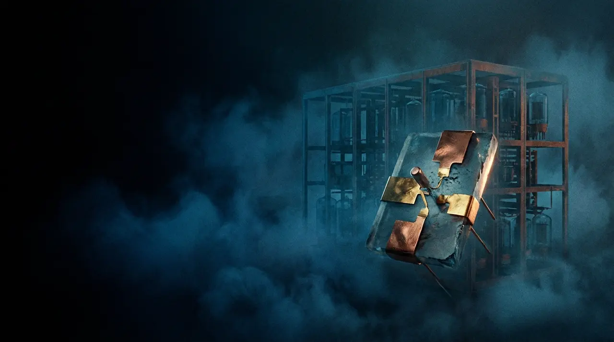
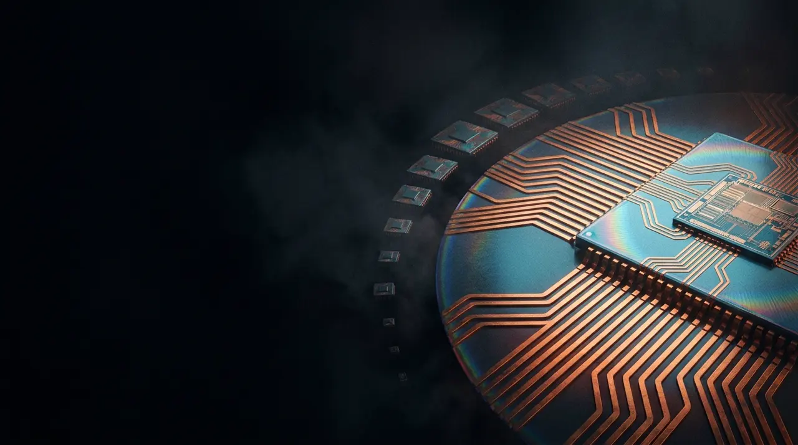
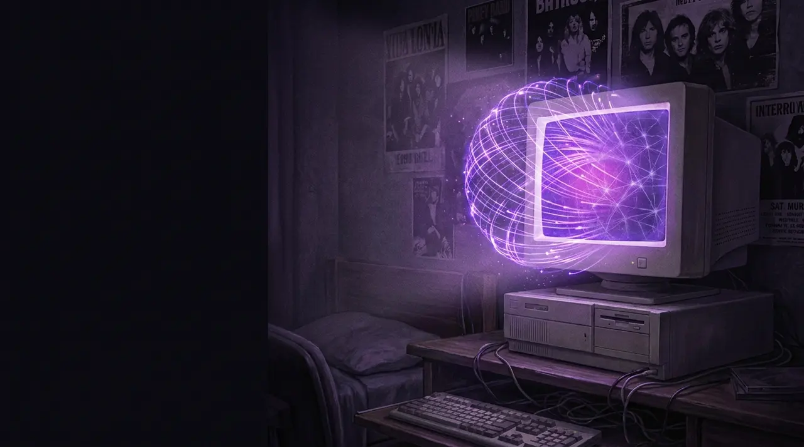
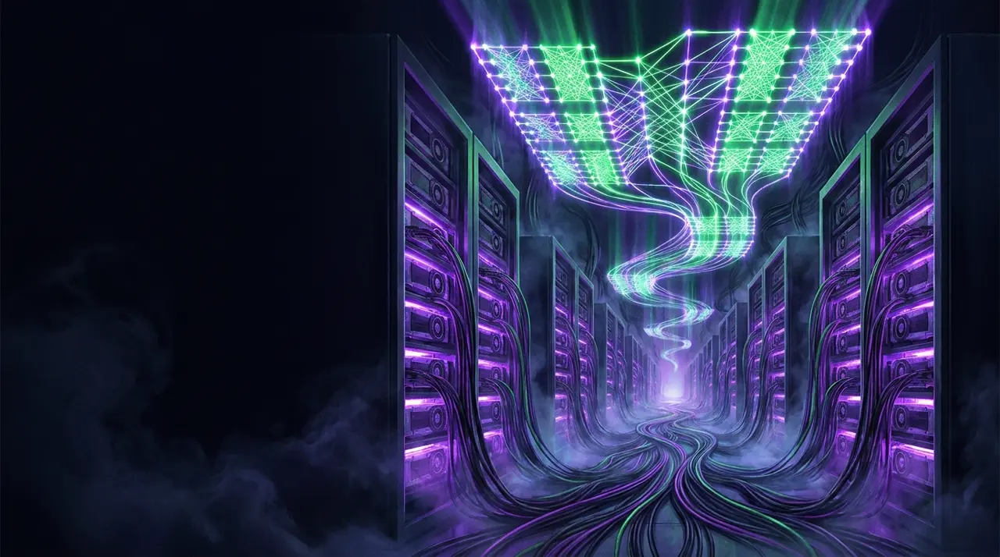
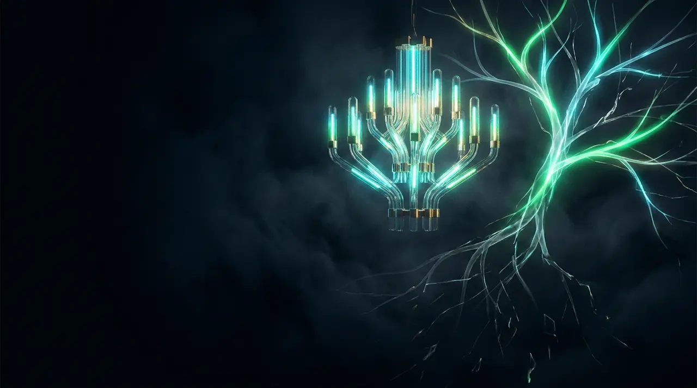

O Oráculo Matemático e a Fita Infinita
Em 1936, no artigo revolucionário "On Computable Numbers", o jovem matemático britânico Alan Mathison Turing formulou o conceito da Máquina Universal de Turing. Ele provou que um único dispositivo hipotético, lendo e escrevendo símbolos em uma fita de papel infinitamente longa, era capaz de simular o comportamento de qualquer outro calculador concebível.
Durante a Segunda Guerra Mundial, em Bletchley Park, o trabalho teórico de Turing tornou-se operacional. Ele desenhou a Bombe para decifrar as transmissões militares da máquina cifradora Enigma alemã, enquanto Tommy Flowers construía o Colossus (o primeiro computador digital eletrônico com 1.500 válvulas termiônicas). Em 1950, Turing publicou o seminal *"Computing Machinery and Intelligence"*, formulando o Teste de Turing.
A Arquitetura Von Neumann e o Milagre do Transistor

Os primeiros computadores eletrônicos gigantes, como o ENIAC (1946) com suas 18.000 válvulas, ocupavam salas inteiras e quebravam constantemente pelo calor e queima de filamentos. Em 1945, John von Neumann distribuiu seu relatório sobre o EDVAC, definindo o conceito de Programa Armazenado: dados e instruções compartilham a mesma memória principal, processados por uma Unidade de Controle e uma ALU. Essa estrutura governa até hoje quase todos os computadores do planeta.
Em 16 de dezembro de 1947, nos Bell Laboratories, John Bardeen, Walter Brattain e William Shockley inventaram o transistor de ponto de contato de germânio. Um interruptor de estado sólido sem partes móveis, frio, minúsculo e infinitamente mais rápido que as válvulas. Em 1956, na conferência de Dartmouth, John McCarthy cunhou oficialmente o termo "Inteligência Artificial".
Circuitos Integrados, Lei de Moore e o Intel 4004

Com a invenção do circuito integrado por Robert Noyce e Jack Kilby, múltiplos transistores puderam ser impressos em uma única lâmina de silício. Em 1965, Gordon Moore formulou a previsão empírica mais lucrativa da história: a Lei de Moore.
Em 1971, a Intel lançou o Intel 4004: o primeiro microprocessador comercial em um único chip, contendo 2.300 transistores. Paralelamente, nos Bell Labs nasciam o sistema operacional UNIX e a linguagem C (Dennis Ritchie e Ken Thompson), enquanto a ARPANET realizava sua primeira transmissão em 1969, tecendo as fundações da infraestrutura digital global.
Computação Pessoal, a World Wide Web e o Backprop

Os computadores finalmente deixaram os data centers corporativos e invadiram as residências. O lançamento do IBM PC (1981) e do icônico Apple Macintosh (1984) popularizou a interface gráfica com janelas, ícones e mouse. Em 1989, no CERN, Tim Berners-Lee inventou a World Wide Web (HTTP, HTML e URLs), conectando a humanidade em uma única malha de hipertexto.
No campo da IA, após um longo "inverno", David Rumelhart, Geoffrey Hinton e Ronald Williams publicaram em 1986 o algoritmo de Retropropagação (Backpropagation), provando que redes neurais multicamadas podiam aprender representações internas complexas através do gradiente descendente.
Computação em Nuvem, GPUs CUDA e o Big Bang do Deep Learning

Na virada do milênio, o cálculo migrou para os data centers elásticos com a computação em nuvem (AWS EC2). Paralelamente, a NVIDIA lançou em 2006 a plataforma CUDA, desbloqueando o poder de processamento massivamente paralelo das GPUs para álgebra linear e matrizes matemáticas.
Em outubro de 2012, Alex Krizhevsky, Ilya Sutskever e Geoffrey Hinton venceram o concurso ImageNet com a AlexNet, esmagando métodos clássicos de visão computacional e iniciando o boom moderno do Deep Learning. Quatro anos depois, em março de 2016, o AlphaGo da Google DeepMind chocou o mundo ao derrotar Lee Sedol no milenar jogo de Go, combinando redes profundas e Monte Carlo Tree Search (MCTS).
A Revolução dos Transformers e a Explosão da IA Generativa
Em junho de 2017, oito pesquisadores do Google publicaram o paper histórico "Attention Is All You Need". A arquitetura Transformer eliminou redes recorrentes (RNNs/LSTMs) em favor do mecanismo de Self-Attention (Auto-Atenção), permitindo que supercomputadores treinassem em paralelo com bilhões de páginas da web sem sofrer gargalos sequenciais.
O salto com o GPT-3 (2020) e o lançamento global do ChatGPT (Novembro de 2022) transformaram a IA no produto de tecnologia de adoção mais acelerada da história humana. O foco expandiu-se rapidamente para a multimodalidade nativa (visão, áudio e código unificados) com GPT-4o e Gemini 1.5.
A Dupla Fronteira: O Salto Quântico (Google Willow) e o Raciocínio System-2 (OpenAI)

Em 2026, a história da computação atinge sua mais espetacular convergência simultânea entre física de hardware e inteligência cognitiva:
O Chip Quântico Willow (Dez/2024–2026)
Dotado de 105 qubits supercondutores transmon, o Willow superou pela primeira vez na história o limiar de correção de erros quânticos ("below-threshold"). Ao aumentar a malha de código de superfície, a taxa de erro lógico diminuiu exponencialmente.
A Revolução do Raciocínio System-2 (o1, o3, GPT-6 Astra)
O fim da era do "chute impulsivo" do próximo token. A fronteira em 2026 é governada pelo Test-Time Compute Scaling: alocação dinâmica de tempo de reflexão onde o modelo explora árvores de hipóteses e auto-corrige seus erros antes de responder.
O Encontro de Duas Trajetórias Históricas
Em 1936, Turing provou que o cálculo podia ser formalizado. Em 2026, com o chip quântico Willow dominando os estados atômicos e a OpenAI dominando a verificação de raciocínio passo a passo, entramos em uma era onde o cálculo e a razão tornam-se ilimitados. A missão da Make AI Better é assegurar que esse poder incalculável seja transparente, seguro e acessível a toda a humanidade.